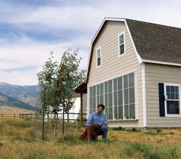
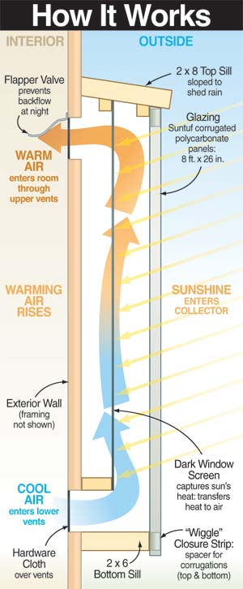
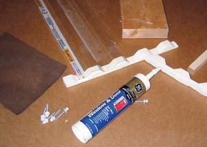
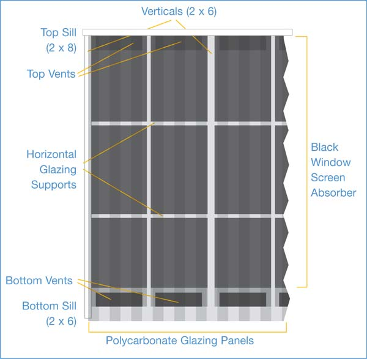
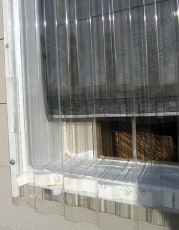

Build A Simple Solar Heater
This low-cost plan lets you turn any south wall into a source of free heat.
By Gary Reysa
December 2006/January 2007
After walking into my workshop one December morning and feeling a bone-chilling 10 degrees, I decided to install a heating system. Given the rising costs of propane and my family’s environmental concerns about using nonrenewable fossil fuels, a solar solution seemed fitting.
I’m a retired aircraft engineer, but you don’t need a similar background to tackle this project. In fact, a solar hot-air collector built into new construction or added to an existing building can be an easy and inexpensive heating solution. Following the simple principles and plan outlined here, you can heat your workshop, barn or even your home with free heat from the sun. If it works here in Bozeman, Mont., it’s bound to work wherever you are.
I reviewed many solar collector concepts and decided to install a thermosiphon air collector on the south wall of the workshop. The elegant, simple thermosiphon design uses only the buoyancy of heated air to create circulation through the collector, eliminating the cost, maintenance and power consumption of fans, sensors and controllers commonly used in other collector designs. On a sunny day, in a cold climate like ours, this simple system can produce heat equivalent to burning about $2 worth of propane (equivalent to about $3 for natural gas).
To minimize costs, I integrated the collector with the structure and used readily available materials. It cost me about $350 and took only one trip to the hardware store. I built and installed it in about three working days. Follow the suggestions below, and you may be able to do it faster!!
How It Works
The thermosiphon collector consists of clear, corrugated polycarbonate panels fastened to 2-by-6-inch studs. The clear panels admit sunlight, and an absorber suspended inside the collector captures the sun’s heat energy. The air around the absorber warms, expands and rises, creating a convection current. Vents at the top and bottom of the collector allow air to circulate through it. Cool air enters the lower vents from the interior, is heated by the absorber, rises to the upper vents and returns to the interior. Air circulation continues as long as the sun shines on the collector.
At night, airflow reverses as air in the collector cools to outside temperatures. Simple flapper valves on the top vents stop this reverse circulation and keep the heat inside.
Performance and Economics
On sunny winter days, the collector raises interior temperatures to between 60 and 75 degrees. In my neck of the woods, that’s 25 to 35 degrees above outside temperatures. Overnight, the building typically cools to 8 to 15 degrees above the outside temperature. On heavily overcast days, the collector does little heating, but on partly cloudy days or with a thin overcast it provides useful heat. It usually takes about three hours to warm the workshop from 35 to 65 degrees-a good excuse to sleep in! If you’re determined to start work early, more insulation, more thermal mass or an early morning blast from a backup heater would be in order.
Be sure to install adequate insulation and to control air infiltration. No solar collector-or any other kind of heating system-will heat a drafty, uninsulated area effectively. The walls and roof of my 700-square-foot workshop are insulated to R-19, as good as many houses.
According to my measurements, the heat output per square foot of panel compares favorably to that of most commercial panels-at less than one-tenth the cost! (See "Heat Gain, Running the Number" near the end of the article for more details.) Our only alternative would have been to heat the workshop with propane. Although a propane heater would have cost a bit less than building the solar collector, paying $2 per gallon for propane over our five-month heating season would have cost $300 to $400 per year. The simple payback period of the collector is a year or two on materials cost. I haven’t needed a backup heater, which is an additional savings.
Sizing the Solar Collector
Usually, the bigger the collector, the better. Most outbuildings suffer high heat losses because of high infiltration rates and inadequate insulation, so the heat a large collector generates can be put to good use. More collector area provides some allowance for partly cloudy and thinly overcast days. With this collector design, overheating usually isn’t a problem. You can easily close off upper vents or add thermal mass, such as water containers. Increased thermal mass also reduces nighttime interior temperature swings.
The added time and material cost is small to build a collector that uses the full south wall versus only part of it. Exceptions to using the full wall include locations with mild climates, well insulated and well sealed buildings, or buildings that are much longer along their east-west axis than their north-south axis. Even if the entire south wall is not available, using a portion still pays off.
Nuts & Bolts
The collector frame is built of common dimension lumber and consists of vertical members, a bottom sill and a top sill. In mine, the six vertical 2-by-6-inch members divide the collector into five 4-foot-wide bays. The bottom sill is a 2-by-6, and a 2-by-8 is used for the top sill. The collector frame components are attached to the building with lag screws driven into them from the inside.
The collector is glazed with clear Suntuf corrugated polycarbonate panels. The manufacturer applies an ultraviolet-resistant coating to the panels’ sun-facing side to extend their life. I used 10 panels, each 26 inches wide by 8 feet high. Pairs of panels are overlapped and joined over a 1-by-1-inch vertical wood strip to make the 4-foot-wide panels for each bay. Two 1-by-1-inch horizontal members provide additional support for the glazing.
The absorber, a black metal window screen, is installed on battens fastened vertically to the uprights and across the top and bottom of the bays, about halfway between the glazing and siding (see photo). After measuring thermal performance with one, two and three layers of screen, I found that two layers work best. The top and bottom vents are simply holes cut through the building’s sheathing and siding. Simple light plastic flapper valves prevent back flow through the upper vents at night.
In summer, the vertical orientation of the panels and the high sun angle minimize overheating, but you should block the top vent openings to prevent the collector from delivering heat. I just staple a piece of cardboard over each top vent, but you could install hinged vent doors. Shading or covering the panels also would work, but is probably unnecessary. In the spring and fall, you can close some vents and leave others open to control the heat output.
Construction Tips
First, measure your building’s south wall to determine how you’ll need to adjust the collector design. Pay particular attention to available height and to stud spacing. Next, lay out the vents. Offset them from the wall studs enough to leave room for the vertical frames to be placed away from studs and lag-screwed from inside the building. Mark the vent locations on the inside and outside of the building to ensure you have no conflicts with electrical wiring. After you’re certain the layout is correct, take a deep breath and cut the vents.
Cut the top sill long enough to lap over the end verticals by at least 1 inch. Bevel the back edge of the top sill so that it slopes about 10 degrees when fitted against the siding, to shed rain. Next, cut the verticals, angling their tops to match the slope of the top sill. Line them up and cut notches for the two 1-by-1-inch horizontal glazing supports.
Next, prime and paint everything. You don’t have to repaint the siding that will be behind the collector, but painting it a dark color will improve the efficiency slightly. Keep in mind that a muted version of this color will show through the collector screen, so be sure it meets your aesthetic sensibilities.
After the paint has cured, mount the verticals to the siding. I fastened them from the inside using 5 inch lag screws, with washers, through the wall sheathing and siding. If your siding is not strong enough to support the weight, align the verticals with the wall studs and drive lag screws from the outside through them and into the studs. Take care to keep everything level, plumb and straight-this will save you a lot of four-letter words later.
Now, attach the top and bottom sills. If desired, install sheet-metal flashing above the top sill to repel rain. Then, seal the perimeter of the collector frame with silicone caulk. Mount the battens and staple the window screen absorber onto them. Fold over the edges of the screen to fit in the bays, which are slightly less than 48 inches wide.
Make your 4-by-8-foot glazing panels by joining pairs of the 26-inch-by-8-foot corrugated panels. Overlap the panels by one corrugation, applying a light bead of silicone caulk between the overlapped sheets. Reinforce the joint by fastening a 1-by-1-inch wood strip on the inside of the overlapped corrugations using screws with washers made of EPDM, a synthetic rubber that stands up to sunlight and high and low temperatures.
Install the horizontal 1-by-1-inch glazing support strips in the notches cut into the collector frame. The surface of the strips should sit flush with the surface of the frame. Do any cleanup, caulking or other work inside the collector frame now. You won’t be able to reach inside after the glazing is attached.
Next, mount the glazing panels. Install foam sealing strips, which are molded to fit the contours of the corrugated panels, on the top and bottom sills. Run caulk beads on the first set of verticals and mount the first glazing panel section. (You’ll quickly find out how square your frame is.) Fasten the panel sections to the frame using screws with EPDM washers. Install the rest of the sections in the same way. Overlap each new section over the previous one by one corrugation, using a bead of caulk in the overlap.
For the flapper valves on the inside top vents, I went high-tech and used two thicknesses of plastic garbage bag. Before adding these, attach half-inch mesh hardware cloth over each vent to keep the flappers from being sucked into the vent. Then, staple the flappers along the top edge of the vent, just above the vent opening.
Collector Variations
A couple of variations could improve the system’s performance. Substituting dual-wall polycarbonate glazing for the single corrugated sheet would reduce thermal losses through the glazing (although some loss in energy absorption also will occur). This type of glazing, which consists of two sheets of polycarbonate separated by support webs, also simplifies installation, since it requires less support and doesn’t have corrugated edges that require sealing. Buildings in cold climates will benefit the most from this change, which would increase the cost by about $100.
Another option is alternating collector panels and windows on the south wall. This approach would admit more light and some direct heat gain through the windows, without the glare, high losses and overheating that accompany full window walls.
You can use the same concept to heat a house or cabin. With some refinement to integrate the vents with the interior wall, the same basic design can provide daytime heat to living spaces. One caveat-the National Mechanical Code prohibits circulation of conditioned air warmer than 120 degrees in wooden stud spaces. While this may not pose a problem for outbuildings, in buildings used for human habitation, consider constructing the collector with metal, rather than wood studs. As an extra measure of safety, wood areas immediately surrounding exit vents also could be flashed with sheet metal.
In altering the collector design, make sure you don’t violate these guidelines:
- The collector’s depth should be at least 1/15 of its height.
- The absorber must offer low resistance to airflow.
- The vent area should be at least 50 percent of the collector’s horizontal cross-sectional area.
- The air path through the collector should be as shown in the “How It Works” diagram.
Other Ways to Build It
This collector could be built with less material and lower cost if it were integrated with the wall during initial construction. It also could be built on the outer surface of the wall, omitting the exterior siding behind it. This might save up to $2 per square foot. For a more finished appearance, you could install a higher grade of sheathing in the collector area.
For a more integrated approach, the wall stud cavities could be used for the collector itself. Using standard 2-by-6 studs at 24-inch spacing, inlet and exit vents could be incorporated in the inside finished wall, with the absorber screen mounted about halfway back in each stud cavity. The collector side of the inside finished wall could be lined with polyisocyanurate foam board insulation, which withstands high temperatures and provides high R-value at modest cost. The R-value of the insulated collector wall would be comparable to that of a standard wall. The glazing could be mounted on 2-by-2-inch members extending along the top and bottom of the collector, and over each of the vertical studs in the collector area.
The difference in materials cost between such a collector and a conventional wall would be close to zero! With a large collector, diagonal bracing or a shear-resistant inside wall may be required to maintain the wall’s shear strength. Be sure to work out an agreement with your building department on the details.
Other approaches surely are possible. If you work out a good one, I’d love to hear about it. Meantime, here’s to your warmth and comfort!
- Gary Reysa worked for Boeing Aircraft. Since 2000, he has lived in Montana, where cold winters, high heating bills and ample sunlight sparked his interest in solar heating. Send your questions about this article or project to gary@BuildItSolar.com. He has posted many other DIY solar projects at his Web site, www.BuildItSolar.com.
Collector Materials
This list shows what I used and my costs, and should help you figure totals for your installation:
| 2” x 6” lumber (verticals, bottom sill) | 68 ft. | $42 |
| 2” x 8” lumber (top sill) | 22 ft. | $18 |
| 1” x 1” lumber (glazing supports) | 130 ft. | $15 |
| Suntuf 8’ x 26” corrugated polycarbonate panels* | 10 | $160 |
| Foam closure molding* | 40 ft. | $10 |
| Screws w/EPDM washers* | 200 | $10 |
| Black metal window screen | 4 x 70 ft. | $70 |
| Paint, caulk, lag screws, hardware cloth, etc. | $25 | |
| Light plastic sheet (vent flappers) | free | |
| Total | $350 |
*Your hardware store may need to special-order these items from the manufacturer, Palram Americas, (800) 999-9459.
Solar Collector Pros & Cons
Pros:
- Simple (not much to go wrong or watch over)
- Easy to build and does not require changes to the building structure
- Long life and little maintenance (so far)
- Very low initial cost (less than one-tenth the cost of most commercial panels)
- Good economic return on the initial investment
- Reduces our greenhouse gas production by about 1,800 pounds per year
- Output can be adjusted by opening and closing vents-summer output can be reduced to zero
- Does not affect use of building (I can still pile stuff against the wall, but now it’s not junk-it’s thermal mass)
- It’s not ugly (or at least not too ugly!)
Cons:
- It hurts a bit to cut holes in the wall (but you’ll get over it)
- The building might require additional thermal mass and insulation to keep inside temperatures from dropping too much at night
Heat Gain: Running the Numbers
In a recent test I did at midday, under typical sunny winter conditions, the collector produced a 50- to 60-degree temperature rise between the lower vent and the upper vent, and an average air velocity at the upper vent of 110 to 120 feet/minute. Peak output was 25,000 Btu/hour, and the total daily heat gain was about 130,000 Btu (38 kWh). This is equivalent to burning about 2 gallons of propane (about $4 worth) at 70 percent efficiency.
Heat gain estimates are based on measurements of the temperature rise and the vent exit velocity. Combining these with the specific heat of air and the density of air gives the collector heat output. I estimated the rate of heat gain using the following equation:
G = A x V x D x (Tu - Tl) x H
G is heat gain rate; A is vent area; V is velocity of air through the vent; D is air density at prevailing temperature and altitude (you’ll have to look this up); Tu is air temperature at the upper vent; Tl is air temperature at the lower vent; and H is the specific heat of air (a measure of the heat required to raise the temperature of a pound of air one degree Fahrenheit; it varies with temperature and pressure but is about 0.24 Btu/lb-F° under everyday conditions).
I measured the temperatures with several $2 Taylor thermometers from the hardware store. The vent exit velocity was taken using a Kestrel wind meter. Although this instrumentation might not meet Sandia National Laboratories’ standards, I believe it does provide a solid estimate of the collector’s performance.
|
 GARY REYSA Build this simple solar heater to tap a free source of heat. |
 LEN CHURCHILL How Solar Heating Works |
 GARY REYSA The solar collector is built from these simple materials. |
 JOAN REYSA The author, Gary Reysa, checks airflow. |
 MATTHEW T. STALLBAUMER A solar collector panel. |
 GARY REYSA This close-up through the polycarbonate shows the absorber screen, the foam sealer molding, screws with EPDM washers, battens and a bottom vent. |